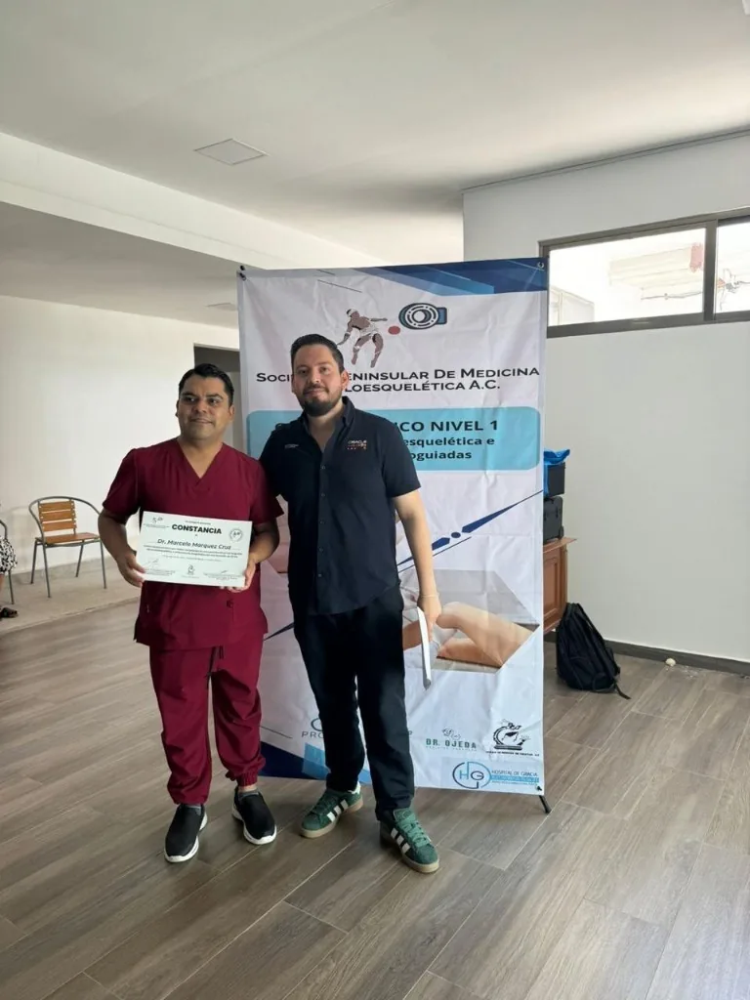
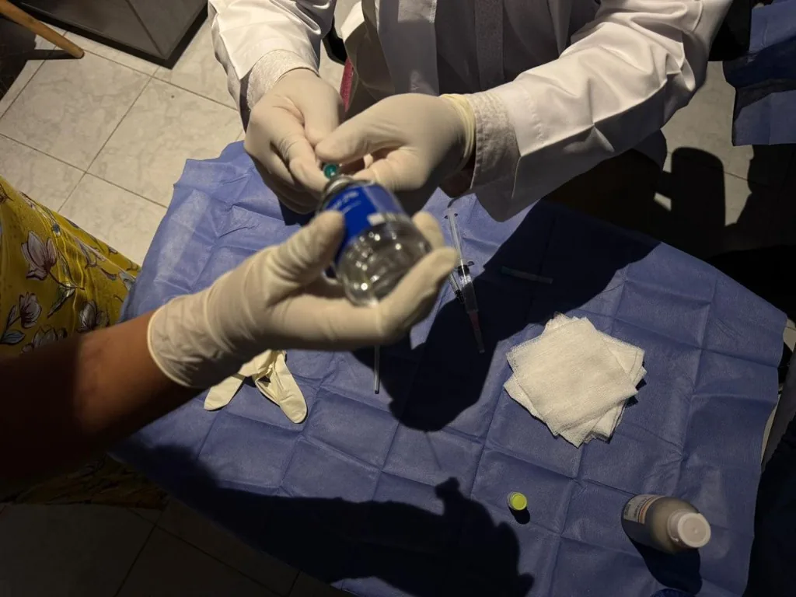
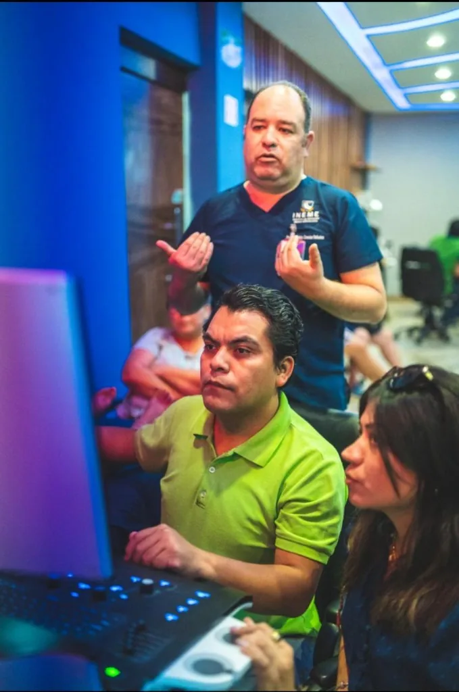
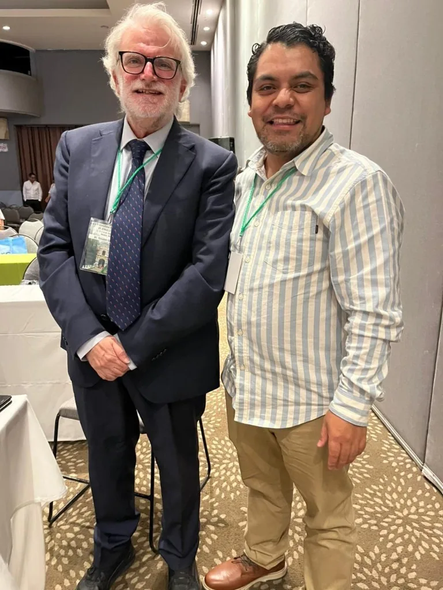
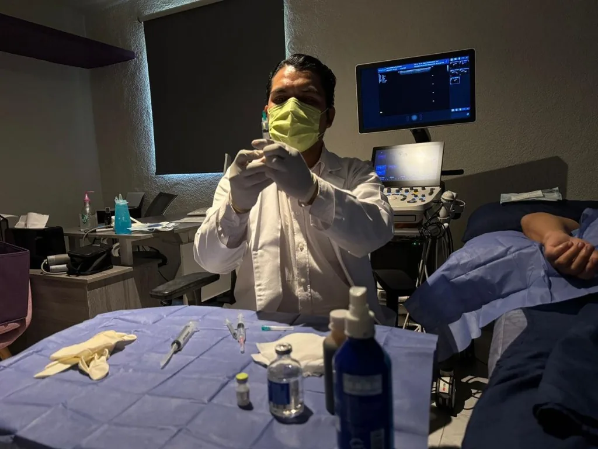

Ultrasonido diagnóstico en Mérida
Dr. Marcelo Márquez — Especialista en ultrasonido musculoesquelético y diagnóstico
Ecografía musculoesquelética, abdominal, ginecológica, Doppler vascular, tiroides y mamario. Resultados el mismo día. Sin radiación. Totalmente seguro.
En consulta
Ultrasonido e intervencionismo guiado
Procedimientos reales en Ultrasonido Biogamma: diagnóstico y terapéutica con guía ecográfica. Sin sonido; puedes pausar en cualquier momento.
Ultrasonido diagnóstico de alta precisión
VE LO QUE OTROS NO VEN.
Diagnóstico en tiempo real, sin radiación, con resultados el mismo día. Ecografía musculoesquelética, abdominal, ginecológica, Doppler vascular, tiroides y mamario en Mérida.
Agenda tu estudioGrupo 1 · Más buscados
Estudios de ultrasonido
Los seis estudios con mayor demanda en México, con páginas propias optimizadas para SEO.
Ultrasonido Musculoesquelético
Hombro, rodilla, muñeca, tobillo, codo, cadera, reumatológico y neurointervencionismo ecoguiado.
Ver detalleUltrasonido Abdominal
Para dolor abdominal, piedras en la vesícula, hígado graso y evaluación renal.
Ver detalleUltrasonido Ginecológico y Obstétrico
Transvaginal, pélvico, control prenatal, morfológico y ultrasonido 4D.
Ver detalleUltrasonido Doppler Vascular
Doppler venoso/vascular de piernas (TVP, várices) y Doppler hepático.
Ver detalleUltrasonido de Tiroides y Cuello
Nódulos tiroideos, bocio, tiroiditis y seguimiento de ganglios cervicales.
Ver detalleUltrasonido Mamario
Evaluación de nódulos; diferencia quiste vs. sólido; complemento de la mastografía.
Ver detalle¿Qué te duele?
Encuentra el estudio según tu síntoma
Identifica lo que sientes y te llevamos al ultrasonido adecuado.
Dr. Marcelo Márquez Cruz
Ultrasonido Musculoesquelético
Evaluación dinámica en tiempo real de músculos, tendones, ligamentos, bursas y articulaciones — sin radiación. Primera elección ante dolor articular, lesiones deportivas y seguimiento reumatológico.
Sin ayuno. Ropa cómoda de dos piezas. Evita cremas en la zona. Trae estudios previos. Ver preparación.
- Rodilla
- Hombro (manguito)
- Muñeca
- Tobillo
- Codo
- Cadera (bursitis trocantérica)
- Lesiones deportivas
Ultrasonido reumatológico
Artritis reumatoide, cristalopatías (gota), artritis, osteoartritis y protocolo Score G-7 cuando está indicado.
Neurointervencionismo musculoesquelético ecoguiado
Drenaje de quiste de Baker, drenaje de bursitis olecraneana e infiltración de rodilla, guiados por ultrasonido. Cotiza por WhatsApp.
Dr. Marcelo Márquez Cruz
Ultrasonido Abdominal
Estudios generales de abdomen: vesícula, hígado y vías biliares, riñones, páncreas, bazo y rastreo completo. Sin radiación y con resultados el mismo día.
Ayuno de 4 a 6 horas (abdominal / hígado y vías). Renal: vejiga llena (~1 L de agua 1 h antes). Hernias: sin ayuno. Ver preparación.
- Ultrasonido abdominal completo
- Hígado y vías biliares
- Ultrasonido renal y vías urinarias
- Tejidos blandos / pared abdominal (hernias)
- Ultrasonido prostático
Dr. Marcelo Márquez Cruz
Ultrasonido Ginecológico y Obstétrico
El ultrasonido ginecológico y transvaginal permite evaluar el útero, los ovarios y las trompas de Falopio. Es el estudio de elección para detectar quistes de ovario, miomas uterinos, endometriosis, pólipos y embarazo ectópico. El ultrasonido transvaginal sin dolor es la norma: puede haber leve incomodidad, no dolor intenso.
Durante el embarazo, el ultrasonido obstétrico y morfológico monitorea el desarrollo fetal semana a semana. El ultrasonido morfológico semana 20 (entre la 18 y 22) revisa la anatomía fetal. Te explicamos la diferencia ultrasonido 2D 3D 4D según la necesidad clínica.
- Ultrasonido transvaginal
- Ultrasonido pélvico ginecológico
- Ultrasonido obstétrico (control prenatal)
- Ultrasonido morfológico (semana 18–22)
- Ultrasonido 4D
- Ultrasonido Doppler obstétrico
- Seguimiento folicular (fertilidad)
Dr. Marcelo Márquez Cruz
Ultrasonido Doppler Vascular
Evalúa el flujo sanguíneo en tiempo real. Priorizamos Doppler venoso/vascular de miembros inferiores (TVP, várices) y Doppler hepático, además de carótidas y testicular cuando están indicados.
Piernas: sin ayuno, ropa de dos piezas. Doppler hepático: ayuno 4–6 h. Ver preparación.
- Doppler venoso / vascular de miembros inferiores (TVP, várices)
- Doppler hepático
- Doppler arterial de extremidades
- Doppler de carótidas
- Doppler testicular (varicocele)
Dr. Marcelo Márquez Cruz
Ultrasonido de Tiroides y Cuello
El ultrasonido tiroideo de alta resolución es el estudio más preciso para evaluar la glándula tiroides, detectar nódulos tiroideos, bocio, tiroiditis y ganglios linfáticos del cuello. En la ecografía tiroides nódulo benigno maligno se valoran características de imagen que orientan el seguimiento o la biopsia.
Es indispensable en el seguimiento de pacientes con hipotiroidismo, hipertiroidismo y nódulos palpables.
- Ultrasonido tiroideo alta resolución
- Ultrasonido de cuello (tiroides + ganglios)
- Ecografía cervical completa
- Seguimiento de nódulos tiroideos
Dr. Marcelo Márquez Cruz
Ultrasonido Mamario
El ultrasonido mamario (ecografía de seno) evalúa nódulos, diferencia quistes de lesiones sólidas y es especialmente útil en mamas densas. Complementa —no sustituye— a la mastografía: la mastografía detecta microcalcificaciones; el ultrasonido caracteriza mejor los nódulos palpables.
Si hay un bulto en el seno o tu médico solicitó ecografía mamaria, agenda tu estudio para una evaluación precisa el mismo día.
- Ultrasonido mamario bilateral
- Evaluación de nódulo en mama
- Complemento de mastografía
- Seguimiento de hallazgos benignos
Catálogo Biogamma
Más estudios del catálogo
Tejidos blandos, testicular, generales, Dopplers y neurointervencionismo — alineados a lo que realizamos en consulta.
Ultrasonido de Hombro
Manguito rotador, bursitis y dolor al elevar el brazo.
Ultrasonido de Rodilla
Ligamentos, meniscos, derrame y quiste de Baker.
Ultrasonido Reumatológico
AR, gota, artritis, osteoartritis y Score G-7.
Neurointervencionismo ecoguiado
Drenaje Baker, olecraneana e infiltración de rodilla.
Hígado y vías biliares
Vesícula, cálculos e hígado graso. Ayuno 4–6 h.
Ultrasonido Renal
Riñones, vías urinarias y cálculos. Vejiga llena.
Tejidos blandos / Hernias
Pared abdominal con evaluación dinámica (Valsalva).
Testicular / Varicocele
Ecografía escrotal y Doppler. Trae pequeña toalla.
Doppler piernas
Venoso/vascular MMII: TVP y várices. Sin ayuno.
Doppler hepático
Flujo portal y vasos hepáticos. Suele pedir ayuno.
Cómo es tu estudio
Sencillo, rápido y sin dolor
Del agendado a los resultados en un mismo día. Así es tu ultrasonido en Ultrasonido Biogamma, Mérida.
-
1
Agenda tu cita
Por WhatsApp o llamada al 999 201 0898. No necesitas orden médica; si la tienes, tráela para enfocar el estudio.
-
2
Prepárate según el estudio
Algunos requieren ayuno o vejiga llena; la mayoría, nada. Consulta la guía de preparación antes de venir.
-
3
Tu ecografía en tiempo real
Entre 15 y 45 minutos, sin radiación e indolora. Te explico lo que voy viendo durante el estudio.
-
4
Resultados el mismo día
Recibes informe e imágenes con una explicación clara para ti y para tu médico tratante.
Sobre mí
Especialista en ultrasonido diagnóstico
Soy el Dr. Marcelo Márquez Cruz. Realizo ultrasonido diagnóstico e intervencionismo guiado en Mérida: ecografía musculoesquelética, abdominal, ginecológica, obstétrica, Doppler, tiroides y mama. Explico cada hallazgo con claridad y entrego resultados el mismo día.

Galería
Consulta, formación y procedimiento
Un vistazo al trabajo clínico y la capacitación continua.




Preguntas frecuentes
Lo que más preguntan mis pacientes
¿Para qué sirve el ultrasonido?
¿El ultrasonido usa radiación? ¿Es peligroso?
¿Cómo prepararme para un ultrasonido abdominal?
¿Cuánto tiempo dura un ultrasonido?
¿Cuál es la diferencia entre ultrasonido y resonancia magnética?
¿Cuál es la diferencia entre mastografía y ultrasonido mamario?
¿El ultrasonido transvaginal duele?
¿Cuándo hacerse un ultrasonido de tiroides?
¿Qué detecta el ultrasonido Doppler?
¿Dónde hacerse un ultrasonido en Mérida?
¿Qué es TI-RADS y BI-RADS?
¿Se necesita cita previa?
Contacto y ubicación
Agenda tu ultrasonido
Atención en Ultrasonido Biogamma, Mérida, Yucatán. Escríbeme o llama para coordinar tu estudio. Resultados el mismo día.